Analytical SPARQL query generator for benchmarks
This project is maintained by xgfd
ASPG generates OLAP queries in SPARQL for benchmarks. Several tools to sample a RDF graph and generate OLAP queries are provided:
DBOB is a OLAP benchmark in SPARQL whose queries are generated using ASPG from DBpedia. Q1-3 are real-world queries, and Q4-12 are generated wiht ASPG.
Query1 Source: DBpedia query log from USEWOD 2016 Research Dataset.
PREFIX geo: <http://www.w3.org/2003/01/geo/wgs84_pos#>
PREFIX dbpedia-owl: <http://dbpedia.org/ontology/>
PREFIX dbpprop: <http://dbpedia.org/property/>
PREFIX foaf: <http://xmlns.com/foaf/0.1/>
SELECT DISTINCT ?Museum (SAMPLE(?name) AS ?name_) (SAMPLE(?abstract) AS ?abstract_) (SAMPLE(?thumbnail) AS ?thumbnail_) (MAX(?latitude) AS ?latitude_) (MAX(?longitude) AS ?longitude_) (SAMPLE(?established) AS ?established_) (SAMPLE(?website) AS ?website_) (SAMPLE(?homepage) AS ?homepage_) (SAMPLE(?wikilink) AS ?wikilink__)
WHERE
{ ?Museum a dbpedia-owl:Museum ;
dbpprop:name ?name ;
dbpedia-owl:abstract ?abstract ;
dbpedia-owl:thumbnail ?thumbnail ;
geo:lat ?latitude ;
geo:long ?longitude ;
dbpprop:established ?established ;
dbpprop:website ?website ;
foaf:homepage ?homepage ;
foaf:isPrimaryTopicOf ?wikilink
FILTER langMatches(lang(?abstract), "ES")
}
GROUP BY ?Museum
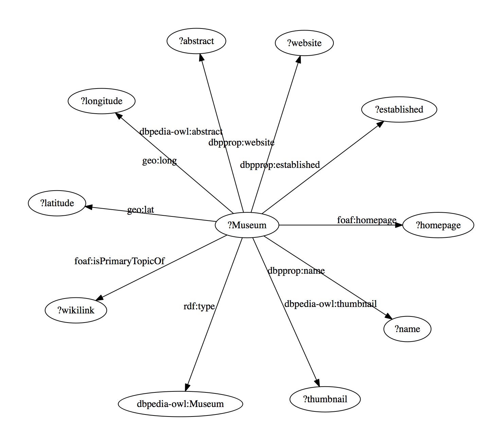
Query2 Source: https://blog.semantic-web.at/2015/09/29/sparql-analytics-proves-boxers-live-dangerously/
PREFIX xsd: <http://www.w3.org/2001/XMLSchema#>
PREFIX rdfs: <http://www.w3.org/2000/01/rdf-schema#>
PREFIX dbp: <http://dbpedia.org/ontology/>
SELECT ?athleteGroupEN (COUNT(?athlete) AS ?count) (AVG(?age) AS ?ageAvg)
WHERE
{ FILTER ( ( ?age >= 20 ) && ( ?age <= 100 ) )
{ SELECT DISTINCT ?athleteGroupEN ?athlete (( ?deathYear - ?birthYear ) AS ?age)
WHERE
{ ?subOfAthlete
rdfs:subClassOf dbp:Athlete ;
rdfs:label ?athleteGroup
FILTER ( lang(?athleteGroup) = "en" )
BIND(str(?athleteGroup) AS ?athleteGroupEN)
?athlete a ?subOfAthlete ;
dbp:birthDate ?birth
FILTER ( datatype(?birth) = xsd:date )
?athlete dbp:deathDate ?death
FILTER ( datatype(?death) = xsd:date )
BIND(strdt(replace(?birth, "^(\\d+)-.*", "$1"), xsd:integer) AS ?birthYear)
BIND(strdt(replace(?death, "^(\\d+)-.*", "$1"), xsd:integer) AS ?deathYear)
}
}
}
GROUP BY ?athleteGroupEN
HAVING ( COUNT(?athlete) >= 25 )
ORDER BY ?ageAvg
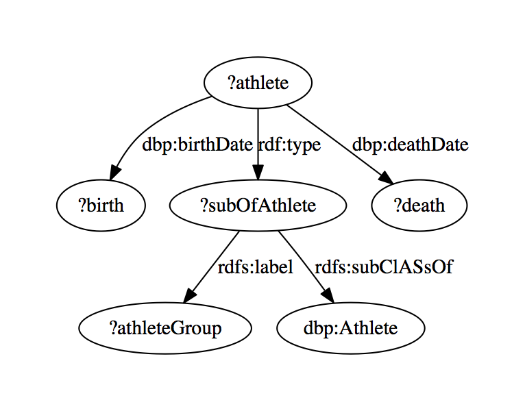
Query3 Source: https://blog.semantic-web.at/2015/11/06/if-you-like-friends-you-probably-also-will-like-veronicas-closet-find-out-with-sparql-why/
PREFIX xsd: <http://www.w3.org/2001/XMLSchema#>
PREFIX dcterms: <http://purl.org/dc/terms/>
PREFIX rdfs: <http://www.w3.org/2000/01/rdf-schema#>
PREFIX dbp: <http://dbpedia.org/ontology/>
PREFIX dbr: <http://dbpedia.org/resource/>
SELECT ?showB ?subjCountShowAB ?subjCountShowA ?subjCountShowB (( strdt(?subjCountShowAB, xsd:double) / ( ( ?subjCountShowA + ?subjCountShowB ) - ?subjCountShowAB ) ) AS ?subjScore)
WHERE
{ { SELECT ?showB ?subjCountShowAB ?subjCountShowA (COUNT(?subject) AS ?subjCountShowB)
WHERE
{ ?showB dcterms:subject ?subject
{ SELECT ?showB (COUNT(?subject) AS ?subjCountShowAB) ?subjCountShowA
WHERE
{ ?showA dcterms:subject ?subject .
?showB dcterms:subject ?subject
FILTER ( ! sameTerm(?showA, ?showB) )
{ SELECT ?showA (COUNT(?subject) AS ?subjCountShowA)
WHERE
{ ?showA dcterms:subject ?subject
FILTER sameTerm(?showA, dbr:Friends)
}
GROUP BY ?showA
}
}
GROUP BY ?showB ?subjCountShowA
}
}
GROUP BY ?showB ?subjCountShowAB ?subjCountShowA
}
}
ORDER BY DESC(?subjScore)
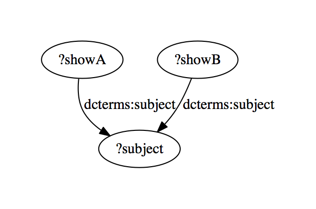
Query4
PREFIX dbo: <http://dbpedia.org/ontology/>
PREFIX dbp: <http://dbpedia.org/property/>
PREFIX dbr: <http://dbpedia.org/resource/>
PREFIX xsd: <http://www.w3.org/2001/XMLSchema#>
PREFIX dcterms: <http://purl.org/dc/terms/>
PREFIX rdfs: <http://www.w3.org/2000/01/rdf-schema#>
SELECT DISTINCT ?Toyota (COUNT(DISTINCT ?Toyota) AS ?Toyota_Count) (COUNT(DISTINCT ?Lexus) AS ?Lexus_Count) (COUNT(DISTINCT ?Nippon_Life) AS ?Nippon_Life_Count) (COUNT(DISTINCT ?Akio_Toyoda) AS ?Akio_Toyoda_Count) (COUNT(DISTINCT ?Toyota_Ractis) AS ?Toyota_Ractis_Count) (COUNT(DISTINCT ?Bank79) AS ?Bank79_Count)
WHERE
{ ?Toyota dbp:divisions ?Lexus .
?Toyota dbp:keyPeople ?Akio_Toyoda .
?Toyota_Ractis
dbo:manufacturer ?Toyota .
?Toyota dbp:owner ?Bank79 ;
dbp:owner ?Nippon_Life .
}
GROUP BY ?Toyota
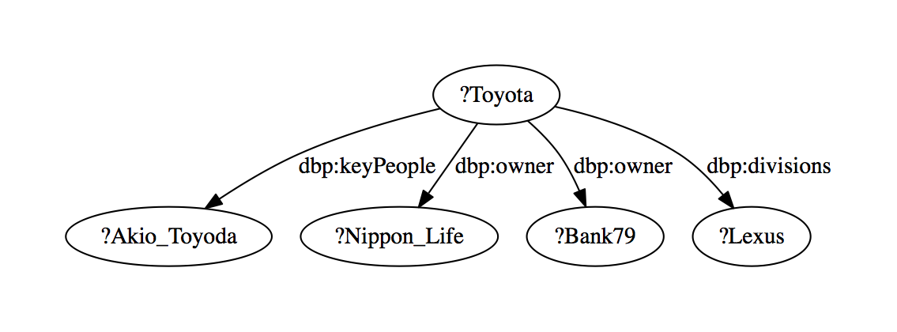
Query5
PREFIX dbo: <http://dbpedia.org/ontology/>
PREFIX dbp: <http://dbpedia.org/property/>
PREFIX dbr: <http://dbpedia.org/resource/>
PREFIX xsd: <http://www.w3.org/2001/XMLSchema#>
PREFIX dcterms: <http://purl.org/dc/terms/>
PREFIX rdfs: <http://www.w3.org/2000/01/rdf_schema#>
SELECT DISTINCT ?HockeyTeam471 (COUNT(DISTINCT ?Jean_Guy_Talbot) AS ?Jean_Guy_Talbot_CountExpr) (COUNT(DISTINCT ?HockeyTeam471) AS ?HockeyTeam471_CountExpr) (COUNT(DISTINCT ?Lou_Angotti) AS ?Lou_Angotti_CountExpr) (COUNT(DISTINCT ?_Sr) AS ?_Sr_CountExpr) (COUNT(DISTINCT ?Bill_Masterton) AS ?Bill_Masterton_CountExpr) (COUNT(DISTINCT ?HockeyTeam540) AS ?HockeyTeam540_CountExpr)
WHERE
{ ?Jean_Guy_Talbot
dbp:playedFor ?HockeyTeam471 .
?Lou_Angotti dbp:before ?Jean_Guy_Talbot .
?Lou_Angotti dbp:after ?Bill_Masterton .
?Bill_Masterton
dbp:playedFor ?HockeyTeam471 .
?Jean_Guy_Talbot
dbp:before ?_Sr ;
dbp:playedFor ?HockeyTeam540 .
}
GROUP BY ?HockeyTeam471
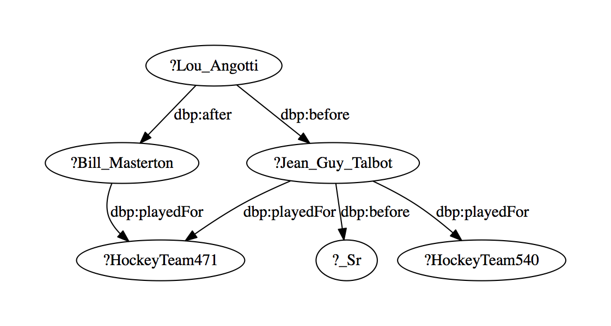
Query6
PREFIX dbo: <http://dbpedia.org/ontology/>
PREFIX dbp: <http://dbpedia.org/property/>
PREFIX dbr: <http://dbpedia.org/resource/>
PREFIX xsd: <http://www.w3.org/2001/XMLSchema#>
PREFIX dcterms: <http://purl.org/dc/terms/>
PREFIX rdfs: <http://www.w3.org/2000/01/rdf_schema#>
SELECT (COUNT(DISTINCT ?FDPThe_Liberals) AS ?FDPThe_Liberals_CountExpr) (COUNT(DISTINCT ?School151) AS ?School151_CountExpr) (COUNT(DISTINCT ?School634) AS ?School634_CountExpr) (COUNT(DISTINCT ?Philipp_Muller) AS ?Philipp_Muller_CountExpr)
WHERE
{ ?Johann_Schneider_Ammann
<http://dbpedia.org/property/party> ?FDPThe_Liberals ;
<http://dbpedia.org/ontology/almaMater> ?School151 ;
<http://dbpedia.org/property/almaMater> ?School634 .
?FDPThe_Liberals
<http://dbpedia.org/property/leader1Name> ?Philipp_Muller
}
GROUP BY ?Johann_Schneider_Ammann
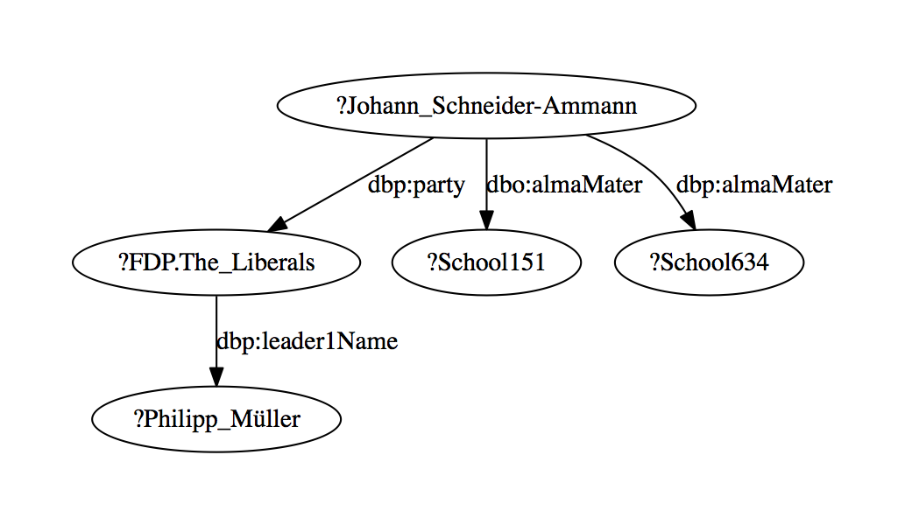
Query7
PREFIX dbo: <http://dbpedia.org/ontology/>
PREFIX dbp: <http://dbpedia.org/property/>
PREFIX dbr: <http://dbpedia.org/resource/>
PREFIX xsd: <http://www.w3.org/2001/XMLSchema#>
PREFIX dcterms: <http://purl.org/dc/terms/>
PREFIX rdfs: <http://www.w3.org/2000/01/rdf_schema#>
SELECT DISTINCT ?SoccerLeague (COUNT(DISTINCT ?Tamires_Cássia_Dias_Gomes) AS ?Tamires_Cássia_Dias_Gomes_CountExpr) (COUNT(DISTINCT ?team) AS ?team_CountExpr) (COUNT(DISTINCT ?SoccerLeague) AS ?SoccerLeague_CountExpr) (COUNT(DISTINCT ?Campeonato_Brasileiro_de_Futebol_Feminino) AS ?Campeonato_Brasileiro_de_Futebol_Feminino_CountExpr)
WHERE
{ ?Tamires_Cássia_Dias_Gomes
dbo:team ?team .
?team dbp:league ?SoccerLeague ;
dbp:league ?Campeonato_Brasileiro_de_Futebol_Feminino .
?Tamires_Cássia_Dias_Gomes
dbp:clubs ?team
}
GROUP BY ?SoccerLeague
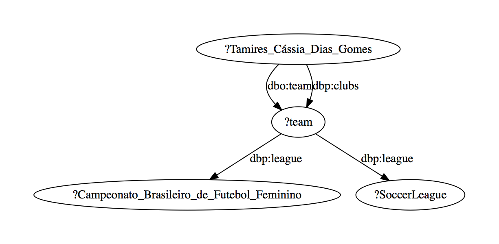
Query8
PREFIX dbo: <http://dbpedia.org/ontology/>
PREFIX dbp: <http://dbpedia.org/property/>
PREFIX dbr: <http://dbpedia.org/resource/>
PREFIX xsd: <http://www.w3.org/2001/XMLSchema#>
PREFIX dcterms: <http://purl.org/dc/terms/>
PREFIX rdfs: <http://www.w3.org/2000/01/rdf_schema#>
SELECT (COUNT(DISTINCT ?Texas_House_of_Representatives) AS ?Texas_House_of_Representatives_CountExpr) (COUNT(DISTINCT ?_Texas) AS ?_Texas_CountExpr) (COUNT(DISTINCT ?Joe_Straus) AS ?Joe_Straus_CountExpr) (COUNT(DISTINCT ?University497) AS ?University497_CountExpr) (COUNT(DISTINCT ?Ronnie_Laws) AS ?Ronnie_Laws_CountExpr) (COUNT(DISTINCT ?Organisation489) AS ?Organisation489_CountExpr) (COUNT(DISTINCT ?Oklahoma) AS ?Oklahoma_CountExpr) (COUNT(DISTINCT ?Organisation75) AS ?Organisation75_CountExpr)
WHERE
{ ?Texas <http://dbpedia.org/property/lowerhouse> ?Texas_House_of_Representatives .
?Texas_House_of_Representatives
<http://dbpedia.org/property/leader> ?Joe_Straus .
?Joe_Straus <http://dbpedia.org/property/almaMater> ?University497 .
?Ronnie_Laws <http://dbpedia.org/ontology/birthPlace> ?Texas .
?Texas <http://dbpedia.org/ontology/capital> ?_Texas ;
<http://dbpedia.org/property/lowerhouse> ?Organisation489 ;
<http://dbpedia.org/property/borderingstates> ?Oklahoma ;
<http://dbpedia.org/property/lowerhouse> ?Organisation75
}
GROUP BY ?Texas
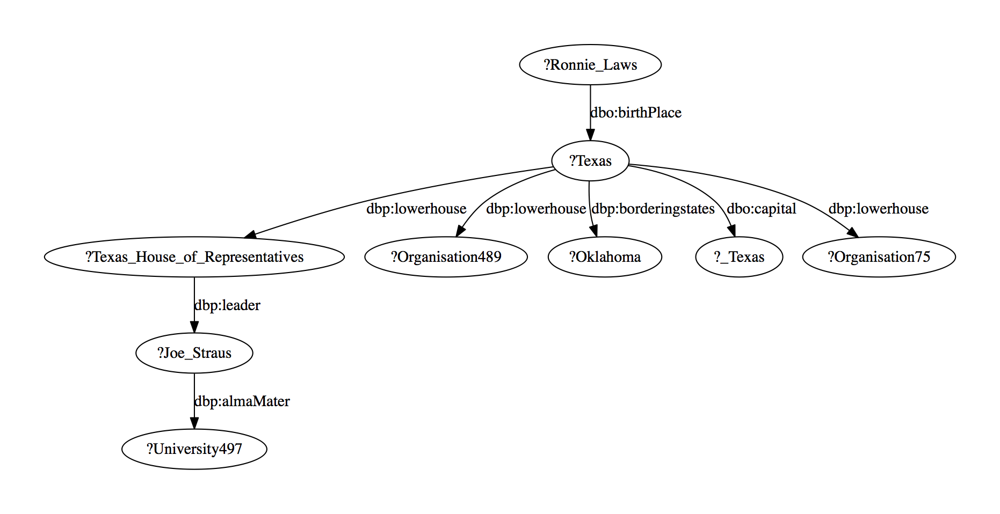
Query9
PREFIX dbo: <http://dbpedia.org/ontology/>
PREFIX dbp: <http://dbpedia.org/property/>
PREFIX dbr: <http://dbpedia.org/resource/>
PREFIX xsd: <http://www.w3.org/2001/XMLSchema#>
PREFIX dcterms: <http://purl.org/dc/terms/>
PREFIX rdfs: <http://www.w3.org/2000/01/rdf_schema#>
SELECT (COUNT(DISTINCT ?Carlos_Lemos_Simmonds) AS ?Carlos_Lemos_Simmonds_CountExpr) (COUNT(DISTINCT ?Andrés_Pastrana_Arango) AS ?Andrés_Pastrana_Arango_CountExpr) (COUNT(DISTINCT ?Carolina_Barco) AS ?Carolina_Barco_CountExpr) (COUNT(DISTINCT ?Ambassador682) AS ?Ambassador682_CountExpr) (COUNT(DISTINCT ?President_of_Colombia) AS ?President_of_Colombia_CountExpr) (COUNT(DISTINCT ?Ambassador613) AS ?Ambassador613_CountExpr) (COUNT(DISTINCT ?María_Emma_Mejía_Vélez) AS ?María_Emma_Mejía_Vélez_CountExpr)
WHERE
{ ?Ernesto_Samper
<http://dbpedia.org/property/vicepresident> ?Carlos_Lemos_Simmonds .
?Andrés_Pastrana_Arango
<http://dbpedia.org/property/successor> ?Carolina_Barco .
?Ernesto_Samper
<http://dbpedia.org/property/successor> ?Andrés_Pastrana_Arango .
?Andrés_Pastrana_Arango
<http://dbpedia.org/property/successor> ?Ambassador682 .
?Ernesto_Samper
<http://dbpedia.org/property/title> ?President_of_Colombia .
?Andrés_Pastrana_Arango
<http://dbpedia.org/ontology/successor> ?Ambassador613 .
?Ernesto_Samper
<http://dbpedia.org/property/successor> ?María_Emma_Mejía_Vélez .
}
GROUP BY ?Ernesto_Samper
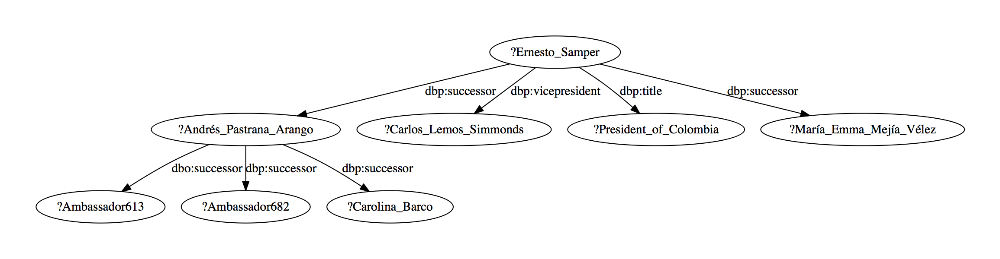
Query10
PREFIX dbo: <http://dbpedia.org/ontology/>
PREFIX dbp: <http://dbpedia.org/property/>
PREFIX dbr: <http://dbpedia.org/resource/>
PREFIX xsd: <http://www.w3.org/2001/XMLSchema#>
PREFIX dcterms: <http://purl.org/dc/terms/>
PREFIX rdfs: <http://www.w3.org/2000/01/rdf_schema#>
SELECT (COUNT(DISTINCT ?X11_color_names) AS ?X11_color_names_CountExpr)
WHERE
{ ?X11_color_names
<http://dbpedia.org/property/name> ?Sky_blue ;
<http://dbpedia.org/property/name> ?Shades_of_green
}
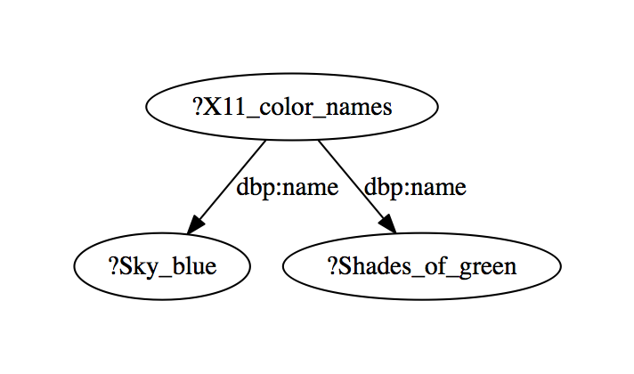
Query11
PREFIX dbo: http://dbpedia.org/ontology/
PREFIX dbp: dbp:
PREFIX dbr: http://dbpedia.org/resource/
PREFIX xsd: http://www.w3.org/2001/XMLSchema#
PREFIX dcterms: http://purl.org/dc/terms/
PREFIX rdfs: http://www.w3.org/2000/01/rdf_schema#
SELECT (COUNT(DISTINCT ?Jim_Stynes) AS ?Jim_Stynes_CountExpr) (COUNT(DISTINCT ?Jack_C_Collins) AS ?Jack_C_Collins_CountExpr) (COUNT(DISTINCT ?Western_Bulldogs) AS ?Western_Bulldogs_CountExpr) (COUNT(DISTINCT ?Charlie_Sutton) AS ?Charlie_Sutton_CountExpr) (COUNT(DISTINCT ?Docklands_Stadium) AS ?Docklands_Stadium_CountExpr) (COUNT(DISTINCT ?Arthur_Olliver) AS ?Arthur_Olliver_CountExpr) (COUNT(DISTINCT ?Scott_West) AS ?Scott_West_CountExpr)
WHERE
{ ?Scott_Wynd dbp:before ?Jim_Stynes .
?Jack_C_Collins
dbp:clubs ?Western_Bulldogs .
?Western_Bulldogs
dbp:backpocket ?Charlie_Sutton .
?Western_Bulldogs
dbp:interchange ?Scott_Wynd ;
dbp:ground ?Docklands_Stadium ;
dbp:interchange ?Arthur_Olliver ;
dbp:ruckrover ?Scott_West
}
GROUP BY ?Scott_Wynd
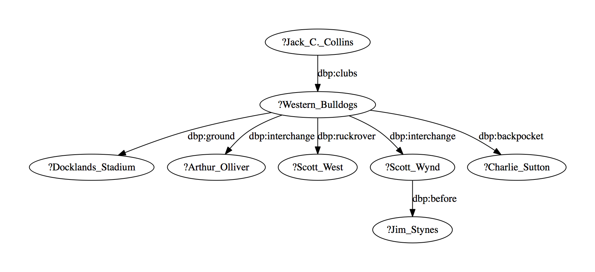
Query12
PREFIX dbo: dbo:
PREFIX dbp: dbp:
PREFIX dbr: http://dbpedia.org/resource/
PREFIX xsd: http://www.w3.org/2001/XMLSchema#
PREFIX dcterms: http://purl.org/dc/terms/
PREFIX rdfs: http://www.w3.org/2000/01/rdf_schema#
SELECT (COUNT(DISTINCT ?H_L_Dattu) AS ?H_L_Dattu_CountExpr) (COUNT(DISTINCT ?Pranab_Mukherjee) AS ?Pranab_Mukherjee_CountExpr) (COUNT(DISTINCT ?Rajendra_Mal_Lodha) AS ?Rajendra_Mal_Lodha_CountExpr) (COUNT(DISTINCT ?University2015) AS ?University2015_CountExpr) (COUNT(DISTINCT ?CricketLeague1806) AS ?CricketLeague1806_CountExpr) (COUNT(DISTINCT ?Manmohan_Singh) AS ?Manmohan_Singh_CountExpr) (COUNT(DISTINCT ?Sumitra_Mahajan) AS ?Sumitra_Mahajan_CountExpr)
WHERE
{ ?H_L_Dattu dbo:appointer ?Pranab_Mukherjee ;
dbp:predecessor ?Rajendra_Mal_Lodha .
?India dbp:leaderName ?H_L_Dattu .
?Rajendra_Mal_Lodha
dbp:almaMater ?University2015 .
?CricketLeague1806
dbo:country ?India .
?Pranab_Mukherjee
dbo:predecessor ?Manmohan_Singh .
?India dbp:leaderName ?Sumitra_Mahajan
}
GROUP BY ?India
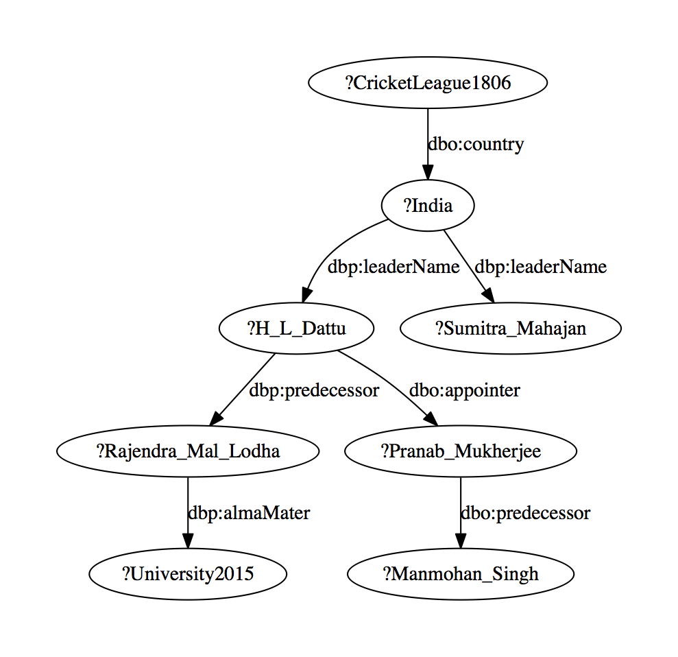